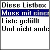
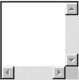
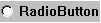

SelfProfan²:Knöpfe,Rahmen und anderes
Knöpfe,Rahmen und anderes
Wenn wir nun ein fertiges Fenster haben, brauchen wir auch noch verschiedene"Elemente" , also Knöpfe oder Auswahlfelder oder Listen oder ...
Diese können wir auf 2 Wegen erzeugen:
Create("Button",%hwnd,"Text",0,0,75,25)
CreateButton(%hwnd,"Text",0,0,75,25)
Hinweis:
CreateButton und die anderen Direkten Funktionen sind nur noch aus Kompatibilitätsgründen
vorhanden. Es ist in der Version 7.0 besser, mit Create zu programmieren.Allerdings ist
der Befehl in Version 4.5 noch nicht vorhanden.
Das sieht nun ziemlich schwer aus, ist es aber nicht. CreateButton ist Englisch und bedeutet
"ErstelleKnopf". %hwnd ist eine Systemzahl und sie enthält die Nummer des Hauptfensters,
dass wir mit Window erstellt haben. Soll der Knopf auf einem anderen Dialog, nicht auf
dem Hauptfenster erscheinen so muss dort die Zahl des anderen Dialoges stehen.
Man kann diese (4stelligen) Zahlen mit unseren Namen vergleichen. Der PC braucht die
Zahlen, unsere Lehrer/innen brauchen unsere Namen. Die vier anderen Parameter sind die
Koordinaten, die man auch bald im Kopf hat, so dass man nicht nur schätzen muss.
Der Parameter "Text" ist die Beschriftung des Knopfes. Sie kann auch ein Blatt sein. Man
könnte einen Knopf auch so erstellen:
CreateButton(%hwnd,par1$,par2%,par3%,par4%,par5%)
Das wäre aber eigentlich umständlicher. %hwnd werden wir noch oft brauchen, da es eine
sehr wichtige Rolle in der Windowsprogrammierung spielt. Alle Elemente, die erzeugt werden
sollen, benötigen %hwnd oder eine andere Dialogzahl. Weiterhin gibt die Funktion
Create eine Zahl zurück,die ähnlich wie %hwnd ist. Ein kleines Beispiel mit dem,
was wir bis jetzt zur Windows-Programmierung gesagt haben:
Declare knopf%
Window 50,50-640,480
WindowTitle "Meine erster Test"
CreateButton(%hwnd,"Knopf",0,0,75,25)
WaitMouse

Genaueres zu den Koordinaten:
0 = 1 Koordinate = Position Links
0 = 2 Koordinate = Position Oben
75 = 3 Koordinate = Größe waagerecht (rechts,links)
25 = 4 Koordinate = Größe senkrecht ( oben,unten)
Typen,die mit Create erzeugt werden können:
| Create("Button"... | Knopf | |
| Create("CheckBox"... | kleine Box,die mit einem Haken versehen werden kann | |
| Create("ChoiceBox"... | AuswahlListe.Der 4 Parameter muss die gesamte Größe enthalten(wenn sie aufgeklappt ist) | |
| Create("Edit"... | Eingabefeld | |
 |
Create("GroupBox"... | Ein Rahmen |
|  | Create("ListBox"... | Muss mit einer Liste gefüllt werden.Im nächsten Kapitel mehr dazu. |
|  | Create("MultiEdit"... | Großes Editfeld |
|  | Create("RadioButton"... | Button zum anklicken,anklicken kann nicht rückgängig gemacht werden. |
| Create("Text"... | Auf Fenstern sollte man kein Print verwenden. |